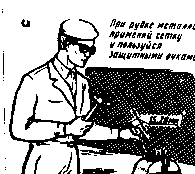
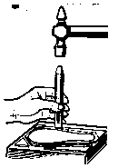
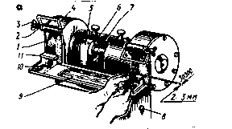

РУБКА МЕТАЛЛА. ПРИСПОСОБЛЕНИЯ И ОБОРУДОВАНИЕ

ТИСКИ
При рубке используют наиболее прочные и тяжёлые тиски. При слесарной рубке применяют поворотные и неповоротные тиски с параллельными губками, при тяжёлой кузнечной – стуловые, которые крепят на специальной тумбе.

НА ПЛИТЕ

ЗАТОЧНЫЙ СТАНОК
Заточка инструмента производится на заточном станке. Для заточки зубило или крейцмейсель накладывают на передвижной подручник и с лёгким нажимом медленно передвигают по всей ширине шлифовального круга, переодически поворачивая инструмент то одной, то другой стороной. Перед заточкой инструмента подручник устанавливают как можно ближе к шлифовальному кругу, Зазор между подручником и заточным кругом должен быть не более 2-3мм. Заточку лучше всего вести с охлаждением водой, в которую добавлено 5% соды, или на мокром круге.